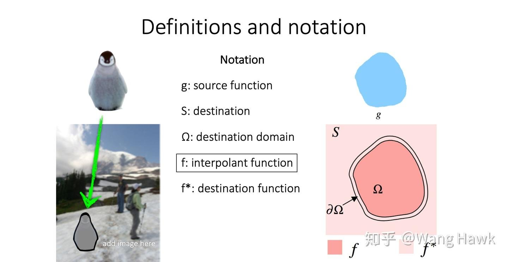
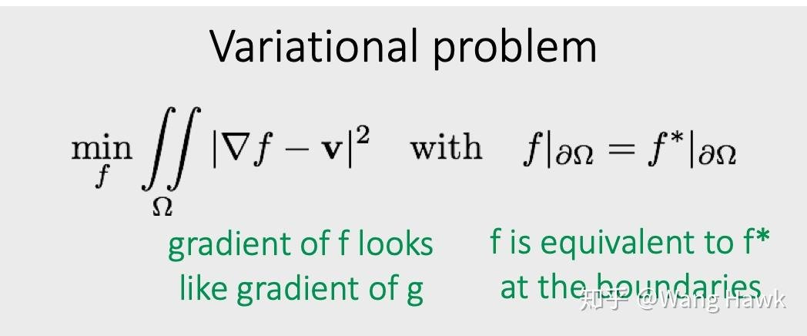
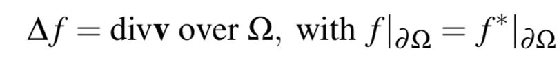
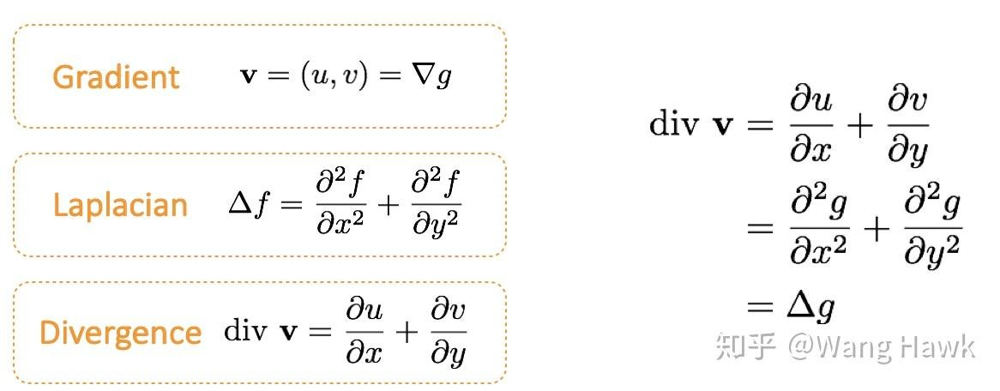
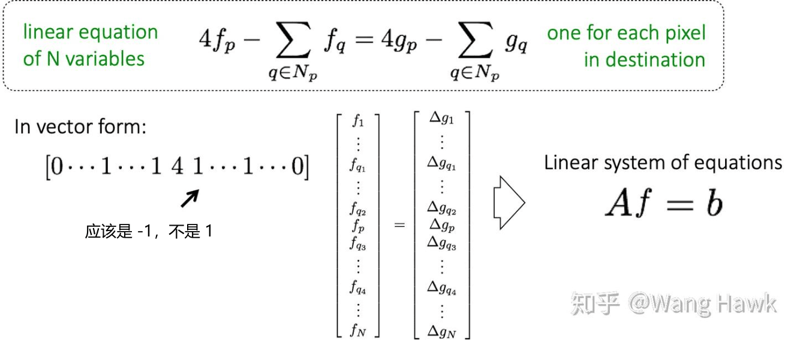

图像融合学习记录
主要就是 拉普拉斯融合 和 泊松融合。图像融合就是两张图和一个 mask 图，根据 mask 图进行融合。
拉普拉斯融合
https://www.cnblogs.com/riddick/p/8922381.html
原理太简单了，就是拉普拉斯金字塔分层，三张图都要进行金字塔分层（即两张图和一张掩模图），然后每一层都进行融合，最后再还原。
泊松融合
https://zhuanlan.zhihu.com/p/58867397
问题建模，\(g\) 是图一，\(s\) 是图二，\(\Omega\) 是融合区域。\(f\) 和 \(f^*\) 都可以理解成一个函数，自变量是像素位置，因变量是像素值；\(f^*\) 是原来的图，\(f\) 是融合后的图。\(\partial \Omega\) 是融合区域的边界。

泊松融合作者认为，遵守两个规则时融合效果最好：第一是融合前后融合区的边界不变，第二是融合前后融合区域的内部梯度不变。然后可以当成一个变分问题，如下所示，理解即可，不用过于纠结数学公式：

其中 \(v\) 是融合前融合区的梯度，\(\nabla f\) 是融合后融合区的梯度，相当于都是 \(n \times 2\) 的矩阵。其实公式的含义就是上一行所说的意思。
然后这个公式的解如下：


其实就是融合前后边界一样、融合前后内部拉普拉斯一样... 然而即使知道这个公式，求解也不好求，这里的求解方式我感觉还是非常值得学习的。
先考虑内部的点，内部的点融合前后拉普拉斯一样，公式如下，其中 \(f\) 都是未知、\(g\) 都是已知：

刚才说了，先考虑内部的点，即图上的 \(f\) 都是内部的点，对于每个特定的 \(f_i\) 而言，其前面的那个系数中，有一个 4、四个 -1，其余全是 0，合并起来，可以得到矩阵 \(A\)。
现在考虑边界，边界的点融合前后保持一样，那么公式即为 \(f_i = g_i\)，因此他们对应的系数中，有一个 1，其余全是 0。
边界和内部的点都考虑进来，构造出 \(A\) 和 \(b\)，然后用最小二乘法求解 \(f\) 即可。
有几个额外的小点：第一，这种方法不能完全保证边界是一样的，也大差不差了；第二，也可以不用最小二乘法求解，这种 \(Ax=b\) 形式实在太典型了，比如用共轭梯度下降法也可以，但这就是最优化方面的细节了，这里不谈；第三，\(A\) 是稀疏矩阵，所以要用稀疏矩阵相关的包，而不是普通矩阵，否则空间浪费严重。
代码如下：
# A 是稀疏矩阵，所以用 scipy.sparse 包
import scipy.sparse as sps
# on_edge 表示像素是否在边界上
on_edge = np.ones(mask.shape[0:2], dtype=bool)
for i in range(0, mask.shape[0]):
for j in range(0, mask.shape[1]):
if mask[i, j]:
# 判断是否在边界上
if i > 0 and i < mask.shape[0]-1 and j > 0 and j < mask.shape[1]-1:
if mask[i-1, j] and mask[i+1, j] and mask[i, j-1] and mask[i, j+1]:
on_edge[i, j] = False
# 每个点的索引值，即在 f 这个向量的索引
point_idx = np.zeros(mask.shape[0:2], dtype=int)
now_idx = 0
for i in range(0, mask.shape[0]):
for j in range(0, mask.shape[1]):
if mask[i, j]:
point_idx[i, j] = now_idx
now_idx += 1
total_num = now_idx
print(f'源图像共有 {total_num} 个像素要进行泊松融合')
A = sps.lil_matrix((total_num, total_num))
b = np.zeros((total_num, 3))
# 构建 A 和 b
for i in range(1, mask.shape[0]-1):
for j in range(1, mask.shape[1]-1):
if mask[i, j]:
# 不在边界，那么这一行 A 是拉普拉斯，b 是 src_img 的拉普拉斯
if not on_edge[i, j]:
A[point_idx[i, j], point_idx[i, j]] = 4
b[point_idx[i, j]] = 4 * src_img[i, j]
for dx, dy in [(0, -1), (0, 1), (-1, 0), (1, 0)]:
A[point_idx[i, j], point_idx[i+dx, j+dy]] = -1
b[point_idx[i, j]] -= src_img[i+dx, j+dy]
# 在边界，那么这一行 A 是 1，b 是 dst_img 的值
else:
A[point_idx[i, j], point_idx[i, j]] = 1
b[point_idx[i, j]] = dst_img[i, j]
newimg = np.copy(dst_img[lox:hix, loy:hiy])
for c in range(3):
f = sps.linalg.spsolve(A.tocsr(), b[:, c])
# ...
代码
完整的代码在 code 文件夹中。